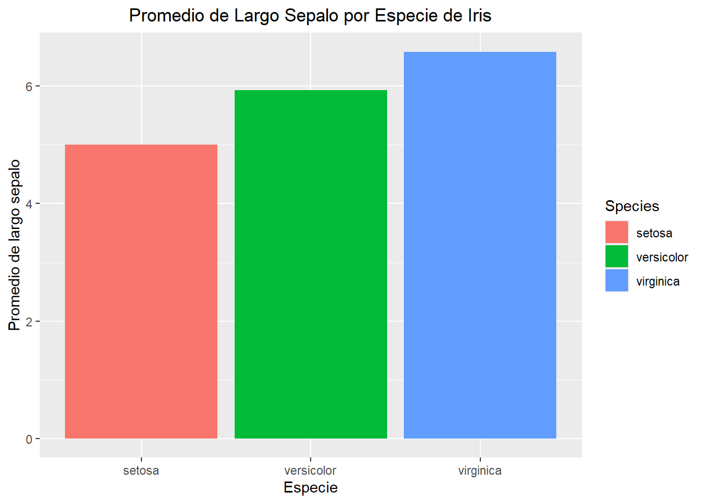

Para explorar y comunicar sus datos, necesita visualizaciónes adecuadas. Hay ambos tipos de gráficos, y desafortunadamente, muchas que no se enseña mucho.
# Partes de un gráfico
Un gráfico debería tener un título descriptivo, títulos cortos para los ejes y ejes con numeración adecuado. Si ocupa colores para demonstar grupos o asociaciones, ten cuidado. Colores como rojo y verde pueden significar para e ir, o mal y bueno. Azul puede ser agua, el mar, el cielo. Verde, la tierra, el bosque, etc.. Ten cuidado con sus colores elegidos.
tipos de gráficos comúnes
Gráfico de colúmnos (bar graph)
Lo más básico es un gráfico de colúmnos. Usualmente no es adecuada porque solo se enseña una cosita. No dice nada del gama de sus datos, ni tampoco un estatistica especifica.
── Attaching core tidyverse packages ──────────────────────── tidyverse 2.0.0 ──
✔ dplyr 1.1.4 ✔ readr 2.1.5
✔ forcats 1.0.0 ✔ stringr 1.5.1
✔ ggplot2 3.5.1 ✔ tibble 3.2.1
✔ lubridate 1.9.3 ✔ tidyr 1.3.1
✔ purrr 1.0.2
── Conflicts ────────────────────────────────────────── tidyverse_conflicts() ──
✖ dplyr::filter() masks stats::filter()
✖ dplyr::lag() masks stats::lag()
ℹ Use the conflicted package (<http://conflicted.r-lib.org/>) to force all conflicts to become errors

Acá hay un gráfico de colúmnos con las tres especies. Puede ver que las especies tienen promedios de largo sepalo distintos, pero no más. No hay información del promedio, ni distribución normal, tampoco el promedio/desviación estander.
dotplot
Un dotplot contiene 2 variables: el variable respuesta en el axis x y explicativa en el axis y. Un dotplot tiene más información de los gráficos de colúmnos.
Acá hay más información y pueden ver distinciones entre las tres especies. Las tres colores (de las especies) estan más o menos seperadas y indicando que es probable que hay diferencias distintas entre largo pico y masa corporal de las tres especies. Tambien, aparece que hay una relación entre masa corporal alta y largo pico alto.
dotplot con línea
`geom_smooth()` using method = 'loess' and formula = 'y ~ x'
Hay dos opciones por una línea, acá tenemos una línea de regressión por cada especie.
`geom_smooth()` using method = 'loess' and formula = 'y ~ x'
Acá tenemos solo una línea que sugiere que hay una relación entre masa corporal y largo pico.
Histogram
El histogram es quizas lo más útil para probar la normalidad de sus datos. Aparece como un gráfico de colúmnos, pero no lo es. Cada número observado en el x-axis (o sea 0=0 abejas colectados, 2=2 abejas colectados) y el y axis es el número de tiempos que cada número observado.
Boxplot
Un boxplot es uno de los gráficos más descriptivos de todos. Los boxplots se muestra todo de su curvo normal, la caja esta todo entre 1 deviación estander, la línea oscura es el promedio de sus datos. Las líneas afeura de la caja son 2-3 deviación estander. Puntos usualmente son outliers.
Boxplot con dotplot
Para mostrar más información, puede añadir los puntos exactos de sus datos.
ggplot2
‘Ggplot2’ está incluído con el paquete ‘tidyverse’. Tiene su propia gramática, pero es parecida a lo de R.
data(iris) # cargando datos de irislibrary(tidyverse)pinguinos %>%# nombre de sus datos/dataframe y el pipe %>% o |>ggplot(aes(x=largo_pico_mm, y= alto_pico_mm))+# empece un gráfico con 'ggplot' y aesteticas (aes())geom_point() # geom_*forma de gráfico* decía a ggplot que quiere
Eso es la forma más básico del ggplot! Pero falta títulos descriptivos todavía.
pinguinos %>%# nombre de sus datos/dataframe y el pipe %>% o |>ggplot(aes(x=largo_pico_mm, y= alto_pico_mm))+# empece un gráfico con 'ggplot' y aesteticas (aes())geom_point()+# geom_*forma de gráfico* decía a ggplot que quierelabs(x="Largo pico (mm)", y="Alto pico (mm)")+# titulos de los ejesggtitle("Distribución del tamaño de pico (mm) de pinguinos") # titulos
Podemos añadir colores también, para distinguir grupos (especies acá) o para aesteticas.
pinguinos %>%# nombre de sus datos/dataframe y el pipe %>% o |>ggplot(aes(x=largo_pico_mm, y= alto_pico_mm, color=especie))+# gráficos pueden ser color o fillgeom_point()+# geom_*forma de gráfico* decía a ggplot que quierelabs(x="Largo pico (mm)", y="Alto pico (mm)")+# titulos de los ejesggtitle("Distribución del tamaño de pico (mm) de pinguinos") # titulos
Puede filtrar datos para un gráfico también.
pinguinos |># nombre de sus datos/dataframe y el pipe %>% o |>filter(especie=="Adelia") |>ggplot(aes(x=largo_pico_mm, y= alto_pico_mm, color=especie))+# empece un gráfico con 'ggplot' y aesteticas (aes())geom_point()+# geom_*forma de gráfico* decía a ggplot que quierelabs(x="Largo pico (mm)", y="Alto pico (mm)")+# titulos de los ejesggtitle("Distribución del tamaño de pico (mm) de pinguinos") # titulos
Warning: Removed 1 row containing missing values or values outside the scale range
(`geom_point()`).